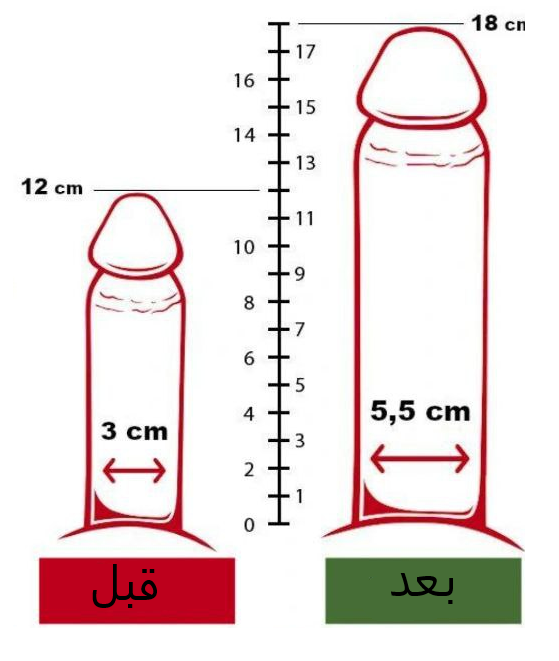
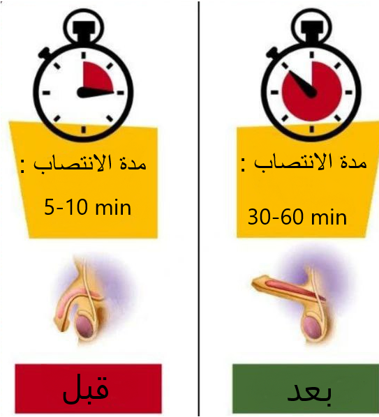

1. الآلية التي تعمل بها الأعشاب لتحسين الأداء الجنسي وزيادة طول القضيب
بعض الأعشاب الطبيعية مثل الجينسنغ تحتوي على مركبات يكون لها تأثيرات فعالة على الأداء الجنسي وحجم القضيب، وهذه التأثيرات يمكن أن تحدث عبر عدة آليات:
- تحفيز تدفق الدم: الأعشاب التي تحتوي على مركبات تحسن الدورة الدموية تسهم في زيادة تدفق الدم إلى الأعضاء التناسلية. من أشهر وأفضل الأعشاب التي تساعد على تحسين الدورة الدموية هي الجينسنغ، وهو يحتوي على مركبات مثل الجينسينوسيدات التي قد تحفز الأوعية الدموية وتساعد على توسعها، مما يؤدي إلى زيادة تدفق الدم إلى الأنسجة الداخلية للقضيب الذي يعمل على زيادة طول القضيب.
كيف يساعد ذلك؟ زيادة تدفق الدم إلى القضيب يساعد في تحسين الانتصاب، ويمنح الشخص شعورًا بالتحسن في الأداء الجنسي، مما يساهم في تحسين حجمه الظاهري أثناء الانتصاب. هذا يعني زيادة دائمة في الحجم أو الطول.
- تحفيز إفراز الهرمونات: بعض الأعشاب تساعد في زيادة مستويات هرمون التستوستيرون. على سبيل المثال، الجينسنغ يُحسن مستويات هذا الهرمون الذي يلعب دورًا كبيرًا في تعزيز النشاط الجنسي وزيادة حجم العضلات. يؤثر التستوستيرون على القدرة الجنسية، بما في ذلك قوة الانتصاب.
كيف يساعد ذلك؟ مستويات أعلى من التستوستيرون تعزز الأداء الجنسي، وتساهم في تحسين القوة والقدرة الجنسية، ولكن تأثيره على الحجم الفعلي للقضيب مثبت علميًا في الدراسات الطبية.
- تحسين مستوى الطاقة والقدرة على التحمل: الأعشاب مثل الجينسنغ تعمل على زيادة مستويات الطاقة بشكل عام، مما يساعد في تقليل التعب وتحسين القدرة على التحمل. يؤدي ذلك إلى تحسين الأداء الجنسي والقدرة على الاستمرار لفترة أطول.
2. التأثيرات على تكبير وتطويل القضيب
رغم أن بعض الأعشاب تساهم في تحسين الأداء الجنسي من خلال زيادة تدفق الدم أو تحفيز الهرمونات، توجد أدلة علمية تدعم فكرة أن الأعشاب تؤدي إلى زيادة دائمة في حجم القضيب. العوامل التي تحدد حجم القضيب بشكل أساسي تشمل العوامل الوراثية (مثل الجينات)، ومستوى الهرمونات أثناء مراحل النمو، ويمكن تعديل هذه العوامل بواسطة الأعشاب.
- التمدد وتحسين الانتصاب: الجينسنغ يجعل القضيب يبدو أكبر أثناء الانتصاب أو إذا كان غير منتصب، وذلك بسبب تأثيراتها في تحسين الدورة الدموية. تؤثر الأعشاب على طول القضيب بشكل دائم عندما يكون غير منتصب.
- التحسينات في الأداء الجنسي: الجينسنغ يساعد في تحسين الأداء الجنسي بشكل عام، مما يحسن من مستوى الثقة لدى الشخص وبالتالي ينعكس بشكل إيجابي على العلاقة الجنسية، لكن هذه التحسينات تشمل زيادة حقيقية وواضحة في الحجم والطول.
3. أفضل الأعشاب المستخدمة لتحسين الأداء الجنسي وزيادة حجم القضيب
- الجينسنغ: كما ذكرنا سابقًا، الجينسنغ الكوري الأحمر هو من أهم وأفضل الأعشاب التي تُستخدم لتحسين تدفق الدم وتعزيز مستويات الطاقة، مما يساهم في تحسين الانتصاب وزيادة الرغبة الجنسية. ويمكن للجينسنغ تغيير الحجم الفعلي للقضيب.
4. الاستنتاج
بعض الأعشاب وأهمها الجينسنغ تُحسن من الأداء الجنسي بشكل عام، وتوفر زيادة دائمة في حجم وطول القضيب. إذا كنت تبحث عن تحسين الأداء الجنسي أو علاج ضعف الانتصاب، فإن هذه الأعشاب توفر لك تلك الفوائد الدائمة بل إضافة الى تحسين تدفق الدم، وزيادة الطاقة، وتعزيز مستويات الهرمونات وزيادة طول عضلة القضيب.